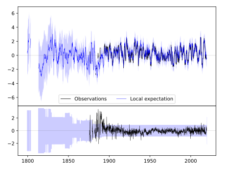
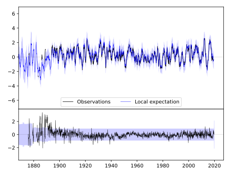
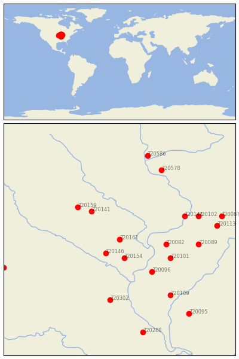

WASHINGTON [USA]


| Neighbour | Name | Country | Distance | Lon/Lat | Years |
|---|
| 720161 | WASHINGTON | USA | 0 | -91.7, 41.3 | 1875-2019 |
| 720146 | FAIRFIELD | USA | 41 | -92.0, 41.0 | 1855-2019 |
| 720154 | MT PLEASANT 1 SSW | USA | 45 | -91.6, 40.9 | 1863-2019 |
| 720141 | BELLE PLAINE | USA | 83 | -92.3, 41.9 | 1889-2019 |
| 720082 | ALEDO | USA | 84 | -90.7, 41.2 | 1879-2019 |
| 720096 | LA HARPE | USA | 97 | -91.0, 40.6 | 1893-2019 |
| 720101 | MONMOUTH | USA | 102 | -90.6, 40.9 | 1881-2019 |
| 720159 | TOLEDO 3N | USA | 107 | -92.6, 42.0 | 1893-2019 |
| 720144 | CLINTON #1 | USA | 129 | -90.3, 41.8 | 1857-2019 |
| 720089 | GALVA | USA | 142 | -90.0, 41.2 | 1862-2019 |
| 720302 | STEFFENVILLE | USA | 145 | -91.9, 40.0 | 1893-2019 |
| 720102 | MORRISON | USA | 151 | -90.0, 41.8 | 1880-2019 |
| 720109 | RUSHVILLE | USA | 162 | -90.6, 40.1 | 1889-2019 |
| 720113 | WALNUT | USA | 178 | -89.6, 41.6 | 1892-2019 |
| 720578 | LANCASTER 4 WSW | USA | 182 | -90.8, 42.8 | 1872-2019 |
| 720087 | DIXON 1 NW | USA | 191 | -89.5, 41.8 | 1881-2019 |
| 720586 | PRAIRIE DU CHIEN | USA | 206 | -91.1, 43.1 | 1822-2019 |
| 720095 | JACKSONVILLE 2E | USA | 218 | -90.2, 39.7 | 1858-2019 |
| 720153 | MT AYR | USA | 220 | -94.2, 40.7 | 1892-2019 |
| 720288 | BOWLING GREEN 1 E | USA | 226 | -91.2, 39.3 | 1883-2019 |